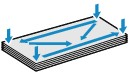
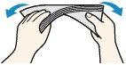
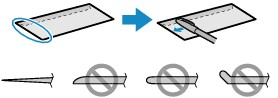
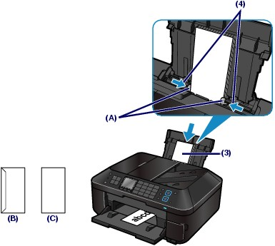
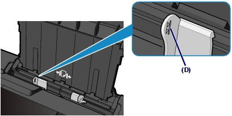

Loading Envelopes
Loading EnvelopesYou can print on European DL and US #10 envelopes.
The address is automatically rotated and printed according to the envelope's direction by specifying with the printer driver properly.
 Important Important
- Envelopes with an embossed or treated surface - Envelopes with a double flap (or sticker flaps) - Envelopes whose gummed flaps are already moistened and adhesive |
Prepare envelopes.
 Press down on all four corners and edges of the envelopes to flatten them.
Press down on all four corners and edges of the envelopes to flatten them.

If the envelopes are curled, hold the opposite corners and gently twist them in the opposite direction.

If the corner of the envelope flap is folded, flatten it.
Use a pen to press the leading edge in the inserting direction flat and sharpen the crease.

The figures above show a side view of the leading edge of the envelope.
| Important
|
Load envelopes.
(1) Open the Paper Support, raise it, then tip it back.
See (1) of step 2 in Loading Photo Paper.
(2) Open the Paper Output Tray gently.
See (2) of step 2 in Loading Photo Paper.
(3) Slide the Paper Guides (A) to open them, and load the envelopes in the center of the Rear Tray WITH THE ADDRESS SIDE FACING YOU.
The folded flap of the envelope will be faced down on the left side.
Up to 10 envelopes can be loaded at once.
(4) Slide the Paper Guides (A) to align them with both sides of the envelopes.
Do not slide the Paper Guides too hard. The envelopes may not be fed properly.

(B) Rear side
(C) Address side
 Note Note
 |
Specify the settings with the printer driver.
(1) Select Envelope in Media Type.
(2) Select Envelope DL (or DL Envelope) or Envelope #10 (or #10 Envelope) in Paper Size.
(3) Select the landscape orientation in Orientation.
| Important
|
| Note
|